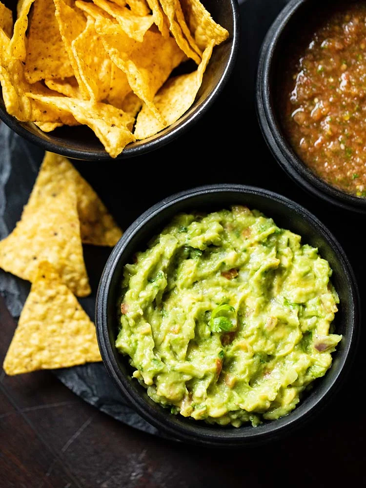

Guacamole
Description
Decades back when living in Bangalore and Goa, I used to see avocados in the markets but did not know what to do with them. So they would never make it to my vegetable groceries until I was introduced again to this amazing fruit when a friend made the simplest guacamole. We liked his version of guacamole recipe. From then on I have been experimenting with guacamole and finally, come to this version which we love at home. Much richer and better in taste than my friend's version who introduced us to guacamole. My guacamole recipe which I have been making for decades now is very easy and has fresh ingredients.
Ingredients
- Ripe avocado
- Onions
- Tomatoes
- Garlic
- Green chillies
- Lemon juice
- Extra virgin olive oil
- Herbs
- Spices
Steps
- First, finely chop 1 small onion, 1 small tomato, mince or finely chop 1 small clove of garlic, 1 to 2 serrano peppers or jalapeño peppers or green chillies and cilantro (coriander leaves). You will 1/4 cup finely chopped tomatoes and need 1/4 cup finely chopped onion, tablespoons chopped cilantro (coriander leaves). Garlic is optional and can be skipped.
- Take all these chopped ingredients in a mixing bowl. Keep aside. chopped onions, tomatoes, peppers, coriander leaves, garlic in a mixing bowl
- Take a ripe avocado and cut it from the center horizontally or vertically into two equal halves.
- So now you have the two avocado halves. Remove the seed with a spoon. Now you can scoop the avocado pulp with a spoon.
- I scoop the avocado pulp and then place these on the chopping board. You can even place the scooped avocado pulp directly in the mixing bowl.
- Then chop them.
- Place the chopped avocado in the mixing bowl.
- Add 2 teaspoons lemon juice or add as required.
- Drizzle 2 teaspoons extra virgin olive oil.
- Lastly, season with salt as per taste and 1/4 teaspoon crushed black pepper or ground black pepper.
- Mix very well. Mash the avocado whilst mixing. Check the taste and add more salt, black pepper or lemon juice if required.
- Serve this best guacamole with toast, tortilla chips, nachos or as an accompaniment with a Burrito or quesadilla. You can garnish with a few coriander leaves while serving.